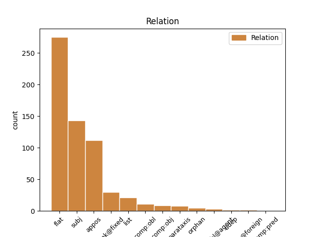
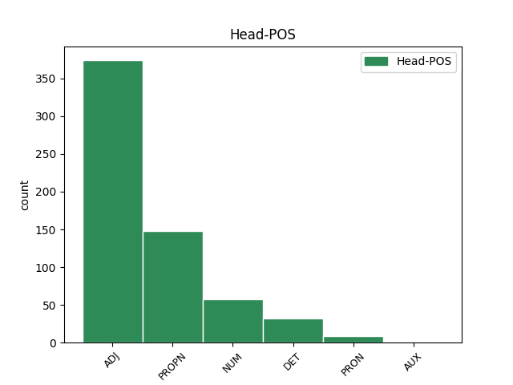
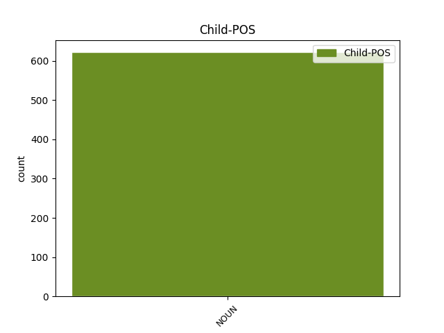

Distribution of features within this leaf



Agreement Rules sorted by frequency.
- When the dependent token is the flat multiword expression(flat) of the head token, and the head token is ADJ and the dependent token is NOUN.
1 15 15 ADJ ORD Case=Gen|Degree=Pos|Gender=Neut|Number=Sing 0 _ _ _
2 января январь NOUN NN Animacy=Inan|Case=Gen|Gender=Masc|Number=Sing 1 flat _ _
3 1503 _ _ _ _ 0 _ _ _
4 года _ _ _ _ 0 _ _ _
5 Тихон _ _ _ _ 0 _ _ _
6 по _ _ _ _ 0 _ _ _
7 немощи _ _ _ _ 0 _ _ _
8 отошёл _ _ _ _ 0 _ _ _
9 на _ _ _ _ 0 _ _ _
10 покой _ _ _ _ 0 _ _ _
11 в _ _ _ _ 0 _ _ _
12 Борисоглебский _ _ _ _ 0 _ _ _
13 монастырь _ _ _ _ 0 _ _ _
14 на _ _ _ _ 0 _ _ _
15 Устье _ _ _ _ 0 _ _ _
16 . _ _ _ _ 0 _ _ _
1 Протагонист _ _ _ _ 0 _ _ _
2 игры _ _ _ _ 0 _ _ _
3 -- _ _ _ _ 0 _ _ _
4 Эш Эш PROPN NNP Animacy=Anim|Case=Nom|Gender=Masc|Number=Sing 0 _ _ _
5 , _ _ _ _ 0 _ _ _
6 персонаж персонаж NOUN NN Animacy=Anim|Case=Nom|Gender=Masc|Number=Sing 4 appos _ _
7 трилогии _ _ _ _ 0 _ _ _
8 Зловещие _ _ _ _ 0 _ _ _
9 мертвецы _ _ _ _ 0 _ _ _
10 . _ _ _ _ 0 _ _ _
1 Аромат аромат NOUN NN Animacy=Inan|Case=Nom|Gender=Masc|Number=Sing 4 subj _ _
2 -- _ _ _ _ 0 _ _ _
3 яркий _ _ _ _ 0 _ _ _
4 цветочный цветочный ADJ JJL Case=Nom|Degree=Pos|Gender=Masc|Number=Sing 0 _ _ _
5 , _ _ _ _ 0 _ _ _
6 есть _ _ _ _ 0 _ _ _
7 сливочные _ _ _ _ 0 _ _ _
8 нотки _ _ _ _ 0 _ _ _
9 и _ _ _ _ 0 _ _ _
10 нотки _ _ _ _ 0 _ _ _
11 молодой _ _ _ _ 0 _ _ _
12 кукурузы _ _ _ _ 0 _ _ _
13 . _ _ _ _ 0 _ _ _
1 Официальный _ _ _ _ 0 _ _ _
2 код код NOUN NN Animacy=Inan|Case=Nom|Gender=Masc|Number=Sing 4 subj _ _
3 -- _ _ _ _ 0 _ _ _
4 8 8 NUM CD Case=Nom|NumType=Card 0 _ _ _
5 3 _ _ _ _ 0 _ _ _
6 37090 _ _ _ _ 0 _ _ _
7 . _ _ _ _ 0 _ _ _
1 Протагонист протагонист NOUN NN Animacy=Anim|Case=Nom|Gender=Masc|Number=Sing 4 subj _ _
2 игры _ _ _ _ 0 _ _ _
3 -- _ _ _ _ 0 _ _ _
4 Эш Эш PROPN NNP Animacy=Anim|Case=Nom|Gender=Masc|Number=Sing 0 _ _ _
5 , _ _ _ _ 0 _ _ _
6 персонаж _ _ _ _ 0 _ _ _
7 трилогии _ _ _ _ 0 _ _ _
8 Зловещие _ _ _ _ 0 _ _ _
9 мертвецы _ _ _ _ 0 _ _ _
10 . _ _ _ _ 0 _ _ _
1 Данный _ _ _ _ 0 _ _ _
2 тип _ _ _ _ 0 _ _ _
3 антенн _ _ _ _ 0 _ _ _
4 широко _ _ _ _ 0 _ _ _
5 используется _ _ _ _ 0 _ _ _
6 в _ _ _ _ 0 _ _ _
7 портативных _ _ _ _ 0 _ _ _
8 радио-коммуникационных _ _ _ _ 0 _ _ _
9 устройствах _ _ _ _ 0 _ _ _
10 , _ _ _ _ 0 _ _ _
11 в _ _ _ _ 0 _ _ _
12 том тот DET DT Case=Loc|Gender=Neut|Number=Sing 0 _ _ _
13 числе число NOUN NN Animacy=Inan|Case=Loc|Gender=Neut|Number=Sing 12 unk@fixed _ _
14 в _ _ _ _ 0 _ _ _
15 мобильных _ _ _ _ 0 _ _ _
16 телефонах _ _ _ _ 0 _ _ _
17 . _ _ _ _ 0 _ _ _
1 Серге́й _ _ _ _ 0 _ _ _
2 Евге́ньевич _ _ _ _ 0 _ _ _
3 Супо́нев _ _ _ _ 0 _ _ _
4 ( _ _ _ _ 0 _ _ _
5 28 _ _ _ _ 0 _ _ _
6 января _ _ _ _ 0 _ _ _
7 1963 _ _ _ _ 0 _ _ _
8 , _ _ _ _ 0 _ _ _
9 Хотьково _ _ _ _ 0 _ _ _
10 , _ _ _ _ 0 _ _ _
11 Московская _ _ _ _ 0 _ _ _
12 область _ _ _ _ 0 _ _ _
13 -- _ _ _ _ 0 _ _ _
14 8 _ _ _ _ 0 _ _ _
15 декабря _ _ _ _ 0 _ _ _
16 2001 _ _ _ _ 0 _ _ _
17 , _ _ _ _ 0 _ _ _
18 Едимоново Едимоново PROPN NNP Animacy=Inan|Case=Nom|Gender=Neut|Number=Sing 0 _ _ _
19 , _ _ _ _ 0 _ _ _
20 Тверская _ _ _ _ 0 _ _ _
21 область область NOUN NN Animacy=Inan|Case=Nom|Gender=Fem|Number=Sing 18 list _ SpaceAfter=No
22 ) _ _ _ _ 0 _ _ _
23 -- _ _ _ _ 0 _ _ _
24 советский _ _ _ _ 0 _ _ _
25 и _ _ _ _ 0 _ _ _
26 российский _ _ _ _ 0 _ _ _
27 , _ _ _ _ 0 _ _ _
28 руководитель _ _ _ _ 0 _ _ _
29 дирекции _ _ _ _ 0 _ _ _
30 детских _ _ _ _ 0 _ _ _
31 программ _ _ _ _ 0 _ _ _
32 ОРТ _ _ _ _ 0 _ _ _
33 ( _ _ _ _ 0 _ _ _
34 1997 _ _ _ _ 0 _ _ _
35 -- _ _ _ _ 0 _ _ _
36 2001 _ _ _ _ 0 _ _ _
37 ) _ _ _ _ 0 _ _ _
38 . _ _ _ _ 0 _ _ _
1 Окончила _ _ _ _ 0 _ _ _
2 Центральную _ _ _ _ 0 _ _ _
3 музыкальную _ _ _ _ 0 _ _ _
4 школу _ _ _ _ 0 _ _ _
5 и _ _ _ _ 0 _ _ _
6 Московскую _ _ _ _ 0 _ _ _
7 консерваторию _ _ _ _ 0 _ _ _
8 ( _ _ _ _ 0 _ _ _
9 1978 1978 ADJ ORD Case=Nom|Degree=Pos|Gender=Masc|Number=Sing 0 _ _ _
10 , _ _ _ _ 0 _ _ _
11 класс класс NOUN NN Animacy=Inan|Case=Nom|Gender=Masc|Number=Sing 9 list _ _
12 Рудольфа _ _ _ _ 0 _ _ _
13 Керера _ _ _ _ 0 _ _ _
14 ) _ _ _ _ 0 _ _ _
15 . _ _ _ _ 0 _ _ _
1 Часть _ _ _ _ 0 _ _ _
2 комнат _ _ _ _ 0 _ _ _
3 сдавались _ _ _ _ 0 _ _ _
4 в _ _ _ _ 0 _ _ _
5 наём _ _ _ _ 0 _ _ _
6 , _ _ _ _ 0 _ _ _
7 так _ _ _ _ 0 _ _ _
8 у _ _ _ _ 0 _ _ _
9 одного один NUM CD Animacy=Anim|Case=Gen|Gender=Masc|Number=Sing|NumType=Card 0 _ _ _
10 из _ _ _ _ 0 _ _ _
11 обитателей _ _ _ _ 0 _ _ _
12 дома _ _ _ _ 0 _ _ _
13 , _ _ _ _ 0 _ _ _
14 богатого _ _ _ _ 0 _ _ _
15 украинского _ _ _ _ 0 _ _ _
16 землевладеца землевладец NOUN NN Animacy=Anim|Case=Gen|Gender=Masc|Number=Sing 9 appos _ _
17 П _ _ _ _ 0 _ _ _
18 . _ _ _ _ 0 _ _ _
1 По _ _ _ _ 0 _ _ _
2 типу _ _ _ _ 0 _ _ _
3 дисперсных _ _ _ _ 0 _ _ _
4 систем _ _ _ _ 0 _ _ _
5 мази _ _ _ _ 0 _ _ _
6 подразделяют _ _ _ _ 0 _ _ _
7 на _ _ _ _ 0 _ _ _
8 гомогенные гомогенный ADJ JJL Animacy=Inan|Case=Acc|Degree=Pos|Number=Plur 0 _ _ _
9 ( _ _ _ _ 0 _ _ _
10 сплавы сплав NOUN NN Animacy=Inan|Case=Acc|Gender=Masc|Number=Plur 8 appos _ SpaceAfter=No
11 , _ _ _ _ 0 _ _ _
12 растворы _ _ _ _ 0 _ _ _
13 ) _ _ _ _ 0 _ _ _
14 , _ _ _ _ 0 _ _ _
15 суспензионные _ _ _ _ 0 _ _ _
16 , _ _ _ _ 0 _ _ _
17 эмульсионные _ _ _ _ 0 _ _ _
18 и _ _ _ _ 0 _ _ _
19 комбинированные _ _ _ _ 0 _ _ _
20 ; _ _ _ _ 0 _ _ _
21 в _ _ _ _ 0 _ _ _
22 зависимости _ _ _ _ 0 _ _ _
23 от _ _ _ _ 0 _ _ _
24 консистентных _ _ _ _ 0 _ _ _
25 свойств _ _ _ _ 0 _ _ _
26 -- _ _ _ _ 0 _ _ _
27 на _ _ _ _ 0 _ _ _
28 собственно _ _ _ _ 0 _ _ _
29 мази _ _ _ _ 0 _ _ _
30 , _ _ _ _ 0 _ _ _
31 гели _ _ _ _ 0 _ _ _
32 , _ _ _ _ 0 _ _ _
33 линименты _ _ _ _ 0 _ _ _
34 , _ _ _ _ 0 _ _ _
35 пасты _ _ _ _ 0 _ _ _
36 . _ _ _ _ 0 _ _ _
1 Поп _ _ _ _ 0 _ _ _
2 Григорий _ _ _ _ 0 _ _ _
3 показывал _ _ _ _ 0 _ _ _
4 : _ _ _ _ 0 _ _ _
5 `` _ _ _ _ 0 _ _ _
6 какая _ _ _ _ 0 _ _ _
7 де _ _ _ _ 0 _ _ _
8 на _ _ _ _ 0 _ _ _
9 нем _ _ _ _ 0 _ _ _
10 , _ _ _ _ 0 _ _ _
11 архиерее _ _ _ _ 0 _ _ _
12 , _ _ _ _ 0 _ _ _
13 скорбь _ _ _ _ 0 _ _ _
14 была _ _ _ _ 0 _ _ _
15 , _ _ _ _ 0 _ _ _
16 про _ _ _ _ 0 _ _ _
17 тое _ _ _ _ 0 _ _ _
18 де _ _ _ _ 0 _ _ _
19 скорбь _ _ _ _ 0 _ _ _
20 он он PRON PRP Case=Nom|Gender=Masc|Number=Sing|Person=3 0 _ _ _
21 , _ _ _ _ 0 _ _ _
22 поп поп NOUN NN Animacy=Anim|Case=Nom|Gender=Masc|Number=Sing 20 appos _ _
23 Григорий _ _ _ _ 0 _ _ _
24 , _ _ _ _ 0 _ _ _
25 не _ _ _ _ 0 _ _ _
26 скажет _ _ _ _ 0 _ _ _
27 , _ _ _ _ 0 _ _ _
28 потому _ _ _ _ 0 _ _ _
29 что _ _ _ _ 0 _ _ _
30 за _ _ _ _ 0 _ _ _
31 клятвою _ _ _ _ 0 _ _ _
32 его _ _ _ _ 0 _ _ _
33 , _ _ _ _ 0 _ _ _
34 архиерейскою _ _ _ _ 0 _ _ _
35 '' _ _ _ _ 0 _ _ _
36 . _ _ _ _ 0 _ _ _
1 В _ _ _ _ 0 _ _ _
2 некоторые _ _ _ _ 0 _ _ _
3 сорта _ _ _ _ 0 _ _ _
4 хлеба _ _ _ _ 0 _ _ _
5 также _ _ _ _ 0 _ _ _
6 добавляют _ _ _ _ 0 _ _ _
7 специи _ _ _ _ 0 _ _ _
8 такие такой DET DT Animacy=Inan|Case=Acc|Number=Plur 0 _ _ _
9 как _ _ _ _ 0 _ _ _
10 зёрна зерно NOUN NN Animacy=Inan|Case=Acc|Gender=Neut|Number=Plur 8 comp:obj _ _
11 тмина _ _ _ _ 0 _ _ _
12 , _ _ _ _ 0 _ _ _
13 орехи _ _ _ _ 0 _ _ _
14 , _ _ _ _ 0 _ _ _
15 изюм _ _ _ _ 0 _ _ _
16 , _ _ _ _ 0 _ _ _
17 чеснок _ _ _ _ 0 _ _ _
18 , _ _ _ _ 0 _ _ _
19 курагу _ _ _ _ 0 _ _ _
20 и _ _ _ _ 0 _ _ _
21 зёрнышки _ _ _ _ 0 _ _ _
22 ( _ _ _ _ 0 _ _ _
23 семена _ _ _ _ 0 _ _ _
24 кунжута _ _ _ _ 0 _ _ _
25 , _ _ _ _ 0 _ _ _
26 мака _ _ _ _ 0 _ _ _
27 ) _ _ _ _ 0 _ _ _
28 . _ _ _ _ 0 _ _ _
1 Лидер _ _ _ _ 0 _ _ _
2 движения _ _ _ _ 0 _ _ _
3 `` _ _ _ _ 0 _ _ _
4 Наши _ _ _ _ 0 _ _ _
5 '' _ _ _ _ 0 _ _ _
6 Никита Никита PROPN NNP Animacy=Anim|Case=Nom|Gender=Masc|Number=Sing 0 _ _ _
7 Боровиков _ _ _ _ 0 _ _ _
8 заявил _ _ _ _ 0 _ _ _
9 , _ _ _ _ 0 _ _ _
10 что _ _ _ _ 0 _ _ _
11 `` _ _ _ _ 0 _ _ _
12 у _ _ _ _ 0 _ _ _
13 Бориса _ _ _ _ 0 _ _ _
14 Ефимовича _ _ _ _ 0 _ _ _
15 шансов _ _ _ _ 0 _ _ _
16 вообще _ _ _ _ 0 _ _ _
17 нет _ _ _ _ 0 _ _ _
18 , _ _ _ _ 0 _ _ _
19 и _ _ _ _ 0 _ _ _
20 это _ _ _ _ 0 _ _ _
21 хорошо _ _ _ _ 0 _ _ _
22 , _ _ _ _ 0 _ _ _
23 так _ _ _ _ 0 _ _ _
24 как _ _ _ _ 0 _ _ _
25 слишком _ _ _ _ 0 _ _ _
26 за _ _ _ _ 0 _ _ _
27 ним _ _ _ _ 0 _ _ _
28 большой _ _ _ _ 0 _ _ _
29 груз _ _ _ _ 0 _ _ _
30 негативного _ _ _ _ 0 _ _ _
31 опыта _ _ _ _ 0 _ _ _
32 '' _ _ _ _ 0 _ _ _
33 , _ _ _ _ 0 _ _ _
34 `` _ _ _ _ 0 _ _ _
35 Мэр _ _ _ _ 0 _ _ _
36 -- _ _ _ _ 0 _ _ _
37 это _ _ _ _ 0 _ _ _
38 не _ _ _ _ 0 _ _ _
39 какая-то _ _ _ _ 0 _ _ _
40 публичная _ _ _ _ 0 _ _ _
41 фигура фигура NOUN NN Animacy=Inan|Case=Nom|Gender=Fem|Number=Sing 6 parataxis _ SpaceAfter=No
42 , _ _ _ _ 0 _ _ _
43 которая _ _ _ _ 0 _ _ _
44 прыгает _ _ _ _ 0 _ _ _
45 , _ _ _ _ 0 _ _ _
46 бегает _ _ _ _ 0 _ _ _
47 , _ _ _ _ 0 _ _ _
48 блистает _ _ _ _ 0 _ _ _
49 и _ _ _ _ 0 _ _ _
50 пиарится _ _ _ _ 0 _ _ _
51 , _ _ _ _ 0 _ _ _
52 а _ _ _ _ 0 _ _ _
53 человек _ _ _ _ 0 _ _ _
54 , _ _ _ _ 0 _ _ _
55 который _ _ _ _ 0 _ _ _
56 решает _ _ _ _ 0 _ _ _
57 конкретные _ _ _ _ 0 _ _ _
58 задачи _ _ _ _ 0 _ _ _
59 '' _ _ _ _ 0 _ _ _
60 . _ _ _ _ 0 _ _ _
1 1960 1960 ADJ ORD Case=Nom|Degree=Pos|Gender=Masc|Number=Sing 0 _ _ _
2 -- _ _ _ _ 0 _ _ _
3 1961 _ _ _ _ 0 _ _ _
4 . _ _ _ _ 0 _ _ _
5 -- _ _ _ _ 0 _ _ _
6 Появление появление NOUN NN Animacy=Inan|Case=Nom|Gender=Neut|Number=Sing 1 parataxis _ _
7 в _ _ _ _ 0 _ _ _
8 газетах _ _ _ _ 0 _ _ _
9 фельетонов _ _ _ _ 0 _ _ _
10 о _ _ _ _ 0 _ _ _
11 Рокотове _ _ _ _ 0 _ _ _
12 -- _ _ _ _ 0 _ _ _
13 крупном _ _ _ _ 0 _ _ _
14 валютном _ _ _ _ 0 _ _ _
15 спекулянте _ _ _ _ 0 _ _ _
16 . _ _ _ _ 0 _ _ _
1 Решение _ _ _ _ 0 _ _ _
2 жюри _ _ _ _ 0 _ _ _
3 о _ _ _ _ 0 _ _ _
4 присуждении _ _ _ _ 0 _ _ _
5 первого _ _ _ _ 0 _ _ _
6 места _ _ _ _ 0 _ _ _
7 RealSpeaker _ _ _ _ 0 _ _ _
8 в _ _ _ _ 0 _ _ _
9 конкурсе _ _ _ _ 0 _ _ _
10 НАИРИТ _ _ _ _ 0 _ _ _
11 так _ _ _ _ 0 _ _ _
12 же _ _ _ _ 0 _ _ _
13 не _ _ _ _ 0 _ _ _
14 осталось _ _ _ _ 0 _ _ _
15 незамеченным незамеченный ADJ JJL Case=Ins|Degree=Pos|Gender=Neut|Number=Sing 0 _ _ _
16 другими _ _ _ _ 0 _ _ _
17 претендентами претендент NOUN NN Animacy=Anim|Case=Ins|Gender=Masc|Number=Plur 15 comp:obl@agent _ _
1 ( _ _ _ _ 0 _ _ _
2 нижний _ _ _ _ 0 _ _ _
3 индекс _ _ _ _ 0 _ _ _
4 -- _ _ _ _ 0 _ _ _
5 номер _ _ _ _ 0 _ _ _
6 члена _ _ _ _ 0 _ _ _
7 последовательности _ _ _ _ 0 _ _ _
8 , _ _ _ _ 0 _ _ _
9 верхний верхний ADJ JJL Case=Nom|Degree=Pos|Gender=Masc|Number=Sing 0 _ _ _
10 -- _ _ _ _ 0 _ _ _
11 номер номер NOUN NN Animacy=Inan|Case=Nom|Gender=Masc|Number=Sing 9 orphan _ orig_deprel=root
12 координаты _ _ _ _ 0 _ _ _
13 ) _ _ _ _ 0 _ _ _
14 . _ _ _ _ 0 _ _ _
1 Теоновские _ _ _ _ 0 _ _ _
2 манускрипты _ _ _ _ 0 _ _ _
3 разнятся _ _ _ _ 0 _ _ _
4 между _ _ _ _ 0 _ _ _
5 собой _ _ _ _ 0 _ _ _
6 , _ _ _ _ 0 _ _ _
7 и _ _ _ _ 0 _ _ _
8 общих _ _ _ _ 0 _ _ _
9 признаков _ _ _ _ 0 _ _ _
10 , _ _ _ _ 0 _ _ _
11 отличающих _ _ _ _ 0 _ _ _
12 их _ _ _ _ 0 _ _ _
13 от _ _ _ _ 0 _ _ _
14 ватиканского _ _ _ _ 0 _ _ _
15 манускрипта _ _ _ _ 0 _ _ _
16 , _ _ _ _ 0 _ _ _
17 немного немного NUM ! Case=Nom 0 _ _ _
18 ( _ _ _ _ 0 _ _ _
19 наиболее _ _ _ _ 0 _ _ _
20 существенный _ _ _ _ 0 _ _ _
21 -- _ _ _ _ 0 _ _ _
22 концовка концовка NOUN NN Animacy=Inan|Case=Nom|Gender=Fem|Number=Sing 17 parataxis _ _
23 IV _ _ _ _ 0 _ _ _
24 книги _ _ _ _ 0 _ _ _
25 ) _ _ _ _ 0 _ _ _
26 . _ _ _ _ 0 _ _ _
1 Актёры актер NOUN NN Animacy=Anim|Case=Nom|Gender=Masc|Number=Plur 3 subj _ _
2 все _ _ _ _ 0 _ _ _
3 те тот DET DT Case=Nom|Number=Plur 0 _ _ _
4 же _ _ _ _ 0 _ _ _
5 , _ _ _ _ 0 _ _ _
6 только _ _ _ _ 0 _ _ _
7 роли _ _ _ _ 0 _ _ _
8 Джеки _ _ _ _ 0 _ _ _
9 Чана _ _ _ _ 0 _ _ _
10 , _ _ _ _ 0 _ _ _
11 Дэвида _ _ _ _ 0 _ _ _
12 Кросса _ _ _ _ 0 _ _ _
13 и _ _ _ _ 0 _ _ _
14 Люси _ _ _ _ 0 _ _ _
15 Лью _ _ _ _ 0 _ _ _
16 ( _ _ _ _ 0 _ _ _
17 то _ _ _ _ 0 _ _ _
18 есть _ _ _ _ 0 _ _ _
19 Обезьяна _ _ _ _ 0 _ _ _
20 , _ _ _ _ 0 _ _ _
21 Журавль _ _ _ _ 0 _ _ _
22 и _ _ _ _ 0 _ _ _
23 Гадюка _ _ _ _ 0 _ _ _
24 ) _ _ _ _ 0 _ _ _
25 были _ _ _ _ 0 _ _ _
26 удалены _ _ _ _ 0 _ _ _
27 , _ _ _ _ 0 _ _ _
28 и _ _ _ _ 0 _ _ _
29 также _ _ _ _ 0 _ _ _
30 Виктор _ _ _ _ 0 _ _ _
31 Гарбер _ _ _ _ 0 _ _ _
32 был _ _ _ _ 0 _ _ _
33 заменён _ _ _ _ 0 _ _ _
34 Паулем _ _ _ _ 0 _ _ _
35 Шеером _ _ _ _ 0 _ _ _
36 , _ _ _ _ 0 _ _ _
37 а _ _ _ _ 0 _ _ _
38 Жан _ _ _ _ 0 _ _ _
39 - _ _ _ _ 0 _ _ _
40 Клод _ _ _ _ 0 _ _ _
41 Ван _ _ _ _ 0 _ _ _
42 Дамм _ _ _ _ 0 _ _ _
43 -- _ _ _ _ 0 _ _ _
44 Энтони _ _ _ _ 0 _ _ _
45 Леондисом _ _ _ _ 0 _ _ _
46 . _ _ _ _ 0 _ _ _
1 Актёры _ _ _ _ 0 _ _ _
2 все _ _ _ _ 0 _ _ _
3 те _ _ _ _ 0 _ _ _
4 же _ _ _ _ 0 _ _ _
5 , _ _ _ _ 0 _ _ _
6 только _ _ _ _ 0 _ _ _
7 роли _ _ _ _ 0 _ _ _
8 Джеки _ _ _ _ 0 _ _ _
9 Чана _ _ _ _ 0 _ _ _
10 , _ _ _ _ 0 _ _ _
11 Дэвида _ _ _ _ 0 _ _ _
12 Кросса _ _ _ _ 0 _ _ _
13 и _ _ _ _ 0 _ _ _
14 Люси _ _ _ _ 0 _ _ _
15 Лью _ _ _ _ 0 _ _ _
16 ( _ _ _ _ 0 _ _ _
17 то то PRON DT Animacy=Inan|Case=Nom|Gender=Neut|Number=Sing 0 _ _ _
18 есть _ _ _ _ 0 _ _ _
19 Обезьяна обезьяна NOUN NN Animacy=Anim|Case=Nom|Gender=Fem|Number=Sing 17 comp:obj _ SpaceAfter=No
20 , _ _ _ _ 0 _ _ _
21 Журавль _ _ _ _ 0 _ _ _
22 и _ _ _ _ 0 _ _ _
23 Гадюка _ _ _ _ 0 _ _ _
24 ) _ _ _ _ 0 _ _ _
25 были _ _ _ _ 0 _ _ _
26 удалены _ _ _ _ 0 _ _ _
27 , _ _ _ _ 0 _ _ _
28 и _ _ _ _ 0 _ _ _
29 также _ _ _ _ 0 _ _ _
30 Виктор _ _ _ _ 0 _ _ _
31 Гарбер _ _ _ _ 0 _ _ _
32 был _ _ _ _ 0 _ _ _
33 заменён _ _ _ _ 0 _ _ _
34 Паулем _ _ _ _ 0 _ _ _
35 Шеером _ _ _ _ 0 _ _ _
36 , _ _ _ _ 0 _ _ _
37 а _ _ _ _ 0 _ _ _
38 Жан _ _ _ _ 0 _ _ _
39 - _ _ _ _ 0 _ _ _
40 Клод _ _ _ _ 0 _ _ _
41 Ван _ _ _ _ 0 _ _ _
42 Дамм _ _ _ _ 0 _ _ _
43 -- _ _ _ _ 0 _ _ _
44 Энтони _ _ _ _ 0 _ _ _
45 Леондисом _ _ _ _ 0 _ _ _
46 . _ _ _ _ 0 _ _ _
Disagree Examples:
1 Когда _ _ _ _ 0 _ _ _
2 он _ _ _ _ 0 _ _ _
3 будет _ _ _ _ 0 _ _ _
4 заполнен _ _ _ _ 0 _ _ _
5 , _ _ _ _ 0 _ _ _
6 у _ _ _ _ 0 _ _ _
7 драконов _ _ _ _ 0 _ _ _
8 появляется _ _ _ _ 0 _ _ _
9 возможность _ _ _ _ 0 _ _ _
10 перейти _ _ _ _ 0 _ _ _
11 в _ _ _ _ 0 _ _ _
12 режим _ _ _ _ 0 _ _ _
13 ярости _ _ _ _ 0 _ _ _
14 , _ _ _ _ 0 _ _ _
15 силе сила NOUN NN Animacy=Inan|Case=Dat|Gender=Fem|Number=Sing 18 comp:obl _ _
16 которого _ _ _ _ 0 _ _ _
17 не _ _ _ _ 0 _ _ _
18 способен способный ADJ JJH Case=Nom|Degree=Pos|Gender=Masc|Number=Sing|Variant=Short 0 _ _ _
19 сопротивляться _ _ _ _ 0 _ _ _
20 ни _ _ _ _ 0 _ _ _
21 один _ _ _ _ 0 _ _ _
22 противник _ _ _ _ 0 _ _ _
23 в _ _ _ _ 0 _ _ _
24 игре _ _ _ _ 0 _ _ _
25 . _ _ _ _ 0 _ _ _
1 Фрэ́нсис _ _ _ _ 0 _ _ _
2 Бэй _ _ _ _ 0 _ _ _
3 ( _ _ _ _ 0 _ _ _
4 ) _ _ _ _ 0 _ _ _
5 , _ _ _ _ 0 _ _ _
6 в _ _ _ _ 0 _ _ _
7 девичестве _ _ _ _ 0 _ _ _
8 -- _ _ _ _ 0 _ _ _
9 Го́ффман _ _ _ _ 0 _ _ _
10 ( _ _ _ _ 0 _ _ _
11 ; _ _ _ _ 0 _ _ _
12 23 23 ADJ ORD Case=Nom|Degree=Pos|Gender=Neut|Number=Sing 0 _ _ _
13 января январь NOUN NN Animacy=Inan|Case=Gen|Gender=Masc|Number=Sing 12 flat _ _
14 1919 _ _ _ _ 0 _ _ _
15 `` _ _ _ _ 0 _ _ _
16 Альберта _ _ _ _ 0 _ _ _
17 , _ _ _ _ 0 _ _ _
18 Канада _ _ _ _ 0 _ _ _
19 -- _ _ _ _ 0 _ _ _
20 15 _ _ _ _ 0 _ _ _
21 сентября _ _ _ _ 0 _ _ _
22 2011 _ _ _ _ 0 _ _ _
23 `` _ _ _ _ 0 _ _ _
24 Лос-Анджелес _ _ _ _ 0 _ _ _
25 , _ _ _ _ 0 _ _ _
26 Калифорния _ _ _ _ 0 _ _ _
27 , _ _ _ _ 0 _ _ _
28 США _ _ _ _ 0 _ _ _
29 ) _ _ _ _ 0 _ _ _
30 -- _ _ _ _ 0 _ _ _
31 канадо-американская _ _ _ _ 0 _ _ _
32 актриса _ _ _ _ 0 _ _ _
33 . _ _ _ _ 0 _ _ _
1 Фрэ́нсис _ _ _ _ 0 _ _ _
2 Бэй _ _ _ _ 0 _ _ _
3 ( _ _ _ _ 0 _ _ _
4 ) _ _ _ _ 0 _ _ _
5 , _ _ _ _ 0 _ _ _
6 в _ _ _ _ 0 _ _ _
7 девичестве _ _ _ _ 0 _ _ _
8 -- _ _ _ _ 0 _ _ _
9 Го́ффман _ _ _ _ 0 _ _ _
10 ( _ _ _ _ 0 _ _ _
11 ; _ _ _ _ 0 _ _ _
12 23 _ _ _ _ 0 _ _ _
13 января _ _ _ _ 0 _ _ _
14 1919 _ _ _ _ 0 _ _ _
15 `` _ _ _ _ 0 _ _ _
16 Альберта _ _ _ _ 0 _ _ _
17 , _ _ _ _ 0 _ _ _
18 Канада _ _ _ _ 0 _ _ _
19 -- _ _ _ _ 0 _ _ _
20 15 15 ADJ ORD Case=Nom|Degree=Pos|Gender=Neut|Number=Sing 0 _ _ _
21 сентября сентябрь NOUN NN Animacy=Inan|Case=Gen|Gender=Masc|Number=Sing 20 flat _ _
22 2011 _ _ _ _ 0 _ _ _
23 `` _ _ _ _ 0 _ _ _
24 Лос-Анджелес _ _ _ _ 0 _ _ _
25 , _ _ _ _ 0 _ _ _
26 Калифорния _ _ _ _ 0 _ _ _
27 , _ _ _ _ 0 _ _ _
28 США _ _ _ _ 0 _ _ _
29 ) _ _ _ _ 0 _ _ _
30 -- _ _ _ _ 0 _ _ _
31 канадо-американская _ _ _ _ 0 _ _ _
32 актриса _ _ _ _ 0 _ _ _
33 . _ _ _ _ 0 _ _ _
1 Согласно _ _ _ _ 0 _ _ _
2 указанному _ _ _ _ 0 _ _ _
3 закону _ _ _ _ 0 _ _ _
4 первые _ _ _ _ 0 _ _ _
5 выборы _ _ _ _ 0 _ _ _
6 высших _ _ _ _ 0 _ _ _
7 должностных _ _ _ _ 0 _ _ _
8 лиц _ _ _ _ 0 _ _ _
9 должны _ _ _ _ 0 _ _ _
10 были _ _ _ _ 0 _ _ _
11 состояться _ _ _ _ 0 _ _ _
12 14 _ _ _ _ 0 _ _ _
13 октября _ _ _ _ 0 _ _ _
14 2012 _ _ _ _ 0 _ _ _
15 года _ _ _ _ 0 _ _ _
16 в _ _ _ _ 0 _ _ _
17 тех _ _ _ _ 0 _ _ _
18 субъектах _ _ _ _ 0 _ _ _
19 Российской _ _ _ _ 0 _ _ _
20 Федерации _ _ _ _ 0 _ _ _
21 , _ _ _ _ 0 _ _ _
22 где _ _ _ _ 0 _ _ _
23 срок _ _ _ _ 0 _ _ _
24 истечения _ _ _ _ 0 _ _ _
25 полномочий _ _ _ _ 0 _ _ _
26 действующих _ _ _ _ 0 _ _ _
27 высших _ _ _ _ 0 _ _ _
28 должностных _ _ _ _ 0 _ _ _
29 лиц _ _ _ _ 0 _ _ _
30 истекает _ _ _ _ 0 _ _ _
31 с _ _ _ _ 0 _ _ _
32 1 _ _ _ _ 0 _ _ _
33 июня _ _ _ _ 0 _ _ _
34 по _ _ _ _ 0 _ _ _
35 31 31 ADJ ORD Case=Acc|Degree=Pos|Gender=Neut|Number=Sing 0 _ _ _
36 декабря декабрь NOUN NN Animacy=Inan|Case=Gen|Gender=Masc|Number=Sing 35 flat _ _
37 2012 _ _ _ _ 0 _ _ _
38 года _ _ _ _ 0 _ _ _
39 . _ _ _ _ 0 _ _ _
1 В _ _ _ _ 0 _ _ _
2 период _ _ _ _ 0 _ _ _
3 с _ _ _ _ 0 _ _ _
4 31 _ _ _ _ 0 _ _ _
5 декабря _ _ _ _ 0 _ _ _
6 2006 _ _ _ _ 0 _ _ _
7 по _ _ _ _ 0 _ _ _
8 31 31 ADJ ORD Case=Acc|Degree=Pos|Gender=Neut|Number=Sing 0 _ _ _
9 декабря декабрь NOUN NN Animacy=Inan|Case=Gen|Gender=Masc|Number=Sing 8 flat _ _
10 2007 _ _ _ _ 0 _ _ _
11 года _ _ _ _ 0 _ _ _
12 Аэропорт _ _ _ _ 0 _ _ _
13 Гуиннер _ _ _ _ 0 _ _ _
14 имени _ _ _ _ 0 _ _ _
15 Роджера _ _ _ _ 0 _ _ _
16 Мелро _ _ _ _ 0 _ _ _
17 обработал _ _ _ _ 0 _ _ _
18 4120 _ _ _ _ 0 _ _ _
19 операций _ _ _ _ 0 _ _ _
20 взлётов _ _ _ _ 0 _ _ _
21 и _ _ _ _ 0 _ _ _
22 посадок _ _ _ _ 0 _ _ _
23 воздушных _ _ _ _ 0 _ _ _
24 судов _ _ _ _ 0 _ _ _
25 ( _ _ _ _ 0 _ _ _
26 в _ _ _ _ 0 _ _ _
27 среднем _ _ _ _ 0 _ _ _
28 11 _ _ _ _ 0 _ _ _
29 операций _ _ _ _ 0 _ _ _
30 ежедневно _ _ _ _ 0 _ _ _
31 ) _ _ _ _ 0 _ _ _
32 , _ _ _ _ 0 _ _ _
33 из _ _ _ _ 0 _ _ _
34 которых _ _ _ _ 0 _ _ _
35 51 _ _ _ _ 0 _ _ _
36 % _ _ _ _ 0 _ _ _
37 пришлось _ _ _ _ 0 _ _ _
38 на _ _ _ _ 0 _ _ _
39 рейсы _ _ _ _ 0 _ _ _
40 аэротакси _ _ _ _ 0 _ _ _
41 , _ _ _ _ 0 _ _ _
42 49 _ _ _ _ 0 _ _ _
43 % _ _ _ _ 0 _ _ _
44 составила _ _ _ _ 0 _ _ _
45 авиация _ _ _ _ 0 _ _ _
46 общего _ _ _ _ 0 _ _ _
47 назначения _ _ _ _ 0 _ _ _
48 и _ _ _ _ 0 _ _ _
49 меньше _ _ _ _ 0 _ _ _
50 1 _ _ _ _ 0 _ _ _
51 % _ _ _ _ 0 _ _ _
52 заняли _ _ _ _ 0 _ _ _
53 рейсы _ _ _ _ 0 _ _ _
54 военной _ _ _ _ 0 _ _ _
55 авиации _ _ _ _ 0 _ _ _
56 . _ _ _ _ 0 _ _ _